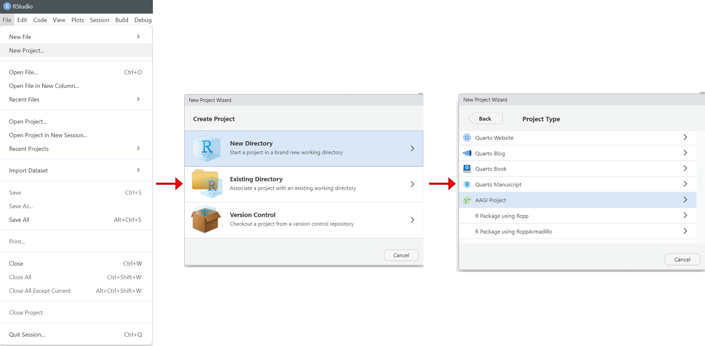
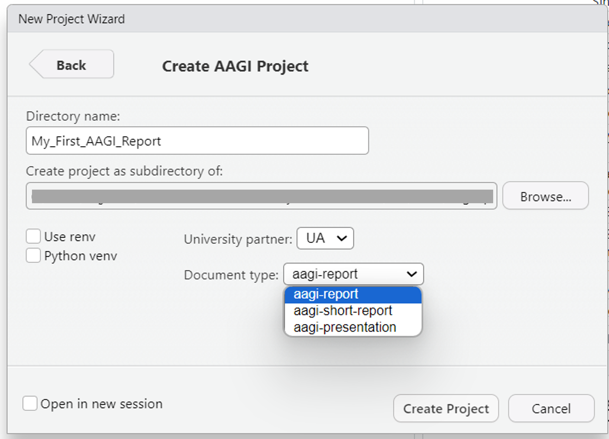
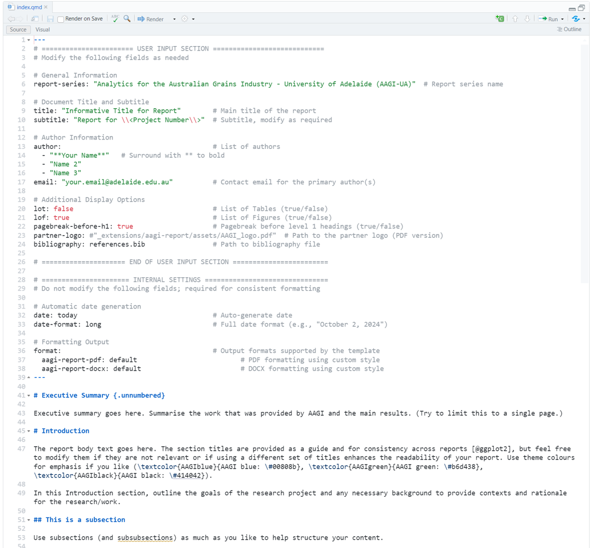
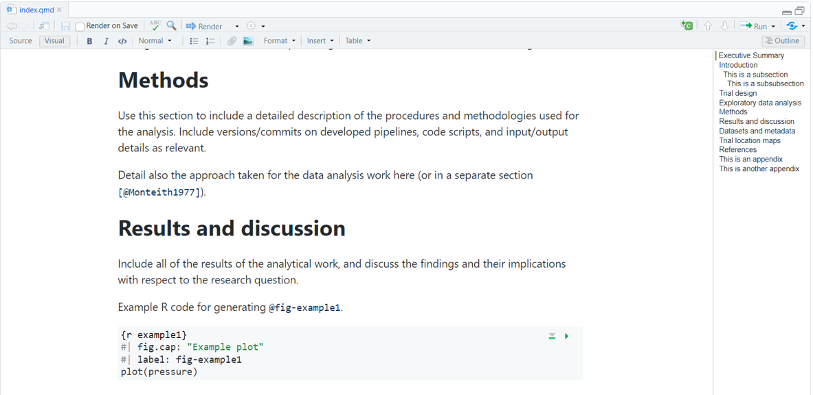
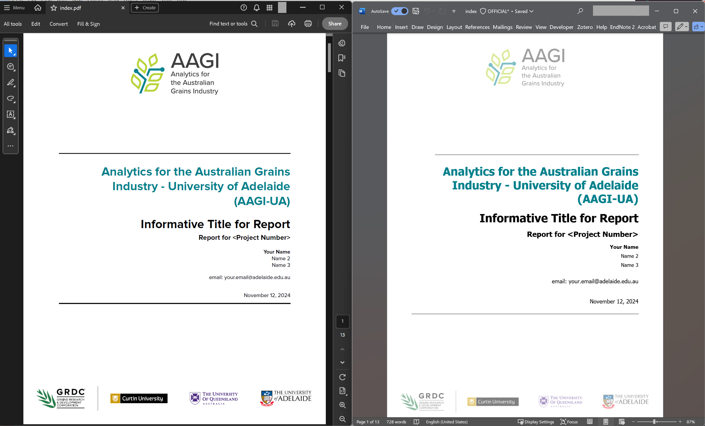

Creating a project with AAGIQuartoExtra
Source:vignettes/articles/creating-a-project.Rmd
creating-a-project.RmdIntroduction
This article provides a guide on using the functions in the AAGIQuartoExtra package to create a structured project, manage folder organization, and work with Quarto documents effectively. There are five important steps we want to cover:
- Create a new project.
- Set up a structured folder hierarchy using
setup_folders(). - Manage and organize Quarto reporting documents in the project with
setup_docs(). - Use
download_fonts()to obtain the Proxima Nova font and understand fallback mechanisms. - Set up Git and GitHub for version control.
1. Creating a new project
In RStudio, you can create a new AAGI Quarto document by clicking on
File -> New Project... -> New Directory -> AAGI Project.
This will create a new AAGI project with the basic structure and
template files.

You will be prompted to enter the name of the project, the university partner, and the type of document you want to create (*only aagi-report is available as of version 0.2.0). The project will be created as a subdirectory in the specified working directory.
If you are familiar with projects environments, you also have the
options to set renv and python virtual environments in the
project.

When your AAGI project is created, you will notice that the new
index.qmd file is created with the title of the project.
This is the main document where you will write your content. You will
notice that it includes some example content to get you started.

You can also open the index.qmd file in the Visual
Editor by clicking on the Visual button in the RStudio
toolbar. This will open the document in the Visual Editor where you can
see a live preview of your document as you write.

If everything is set up correctly, you should be able to work and render AAGI Quarto reports in the created directory. Below, we will cover some additional functionalities that can help and facilitate the organisation of the project files.
2. Setting up a folder structure
When learning data analysis, it can be challenging to figure out how to organise files within the created project. It is good practice to establish a comprehensive file organisation structure that helps us to navigate and re-use the project content without losing a huge amount of time searching across lines of codes and files.
We want to use structured projects that will help us understand how
files are laid out weeks or months after we’ve last worked on that
project. One way is to create sub-folders for specific types of files,
such as data, figures, function files, and documents. Using the
setup_folders() function can help create a standardized
folder hierarchy. This function organizes your project with the
following folders:
- data: Contains raw data files used in the project (read-only).
- code: Contains R scripts for analysis and pre-processing.
- figs: Stores generated plots, tables, or figures.
- doc: Contains reports, manuscripts, or interim summaries.
- output: Holds processed data or logs created by scripts.
- src: Contains sourced scripts (e.g., helper functions).
- admin: For administrative files like project timelines or meeting notes.
To set up the proposed structure, just run:
AAGIQuartoExtra::setup_folders()You will see that the function will create the directories in your project root. You are free to remove/modify/add folders depending on your project requirements.
3. Managing Quarto documents
Based on the proposed structure, we should have all documents
(e.g. PDF or DOCX files) stored within the /doc folder. The
setup_docs() function helps organize your initial
index.qmd and _quarto.yml files by renaming
and updating their configuration.
To use this function, simply run:
AAGIQuartoExtra::setup_docs()For instance, let’s say we are working on a Wheat Nitrogen Response
research project. The created project has been named
res_WheatNitrogenResponse, so running the
setup_docs() function will:
- Rename
index.qmdto01_WheatNitrogenResponse_Report.qmd. - Add the following entry to the
_quarto.ymlfile:
Now, clicking on Build -> Render Project in the
RStudio toolbar will render the document to PDF and Word formats and
save them in the /doc directory as
01_WheatNitrogenResponse_Report.pdf and
01_WheatNitrogenResponse_Report.docx. If everything is set
up correctly, you should see rendered PDF and Word documents similar to
these:

You should try to follow the naming convention for additional documents within the same project, for instance:
02_WheatNitrogenResponse_Manuscript.qmd03_WheatNitrogenResponse_ConferencePaper.qmd04_WheatNitrogenResponse_Slides.qmd
The numbering system ensures clarity and logical ordering. Another possibility/recommendation is to include version number or dates written in ISO 8601 (YYYY-MM-DD).
4. Working with fonts
Checking for Proxima Nova
The template uses the Proxima Nova font if available. If the font is not installed and you render any document, the package will fall back to Arial font.
If you want to check if this font is installed, use:
AAGIQuartoExtra::check_fonts()Downloading Proxima Nova Fonts
If you have access to the Proxima Nova font files within the private
AAGI repository, you can use the download_fonts() function
to retrieve and add them your project. This function:
- Downloads the required
.otffont files from the private GitHub repository. - Extracts the files into the
_extensions/aagi/fonts/directory within your project.
While doing that, the function will automatically call
setup_github_pat() to ensure you have the correct
permissions to download from the repository. Run the following command
to download the fonts:
AAGIQuartoExtra::download_fonts()If the fonts are downloaded successfully, the template will from now use Proxima Nova. If the download fails or the font is unavailable, Arial will continue to be used as the fallback.
5. Setting up Git and GitHub for version control
Version control is essential for managing changes and collaborating
effectively in data analysis projects. You can set up Git and GitHub for
your project using the usethis package. To configure Git
for your project:
- Open your R session and navigate to your project directory.
- Run the following commands:
usethis::use_git()This initializes a Git repository in your project directory.
To connect your project to a private GitHub repository, run:
# If creating a GitHub repository in your personal account
usethis::use_github(private = TRUE)
# If creating a GitHub repository within the AAGI organisation
usethis::use_github(organisation = "AAGI-Org-AU", private = TRUE)This will create a new private repository on GitHub and link it to your local project.
For detailed steps, I leave you here with a great guide on using Git in R written by Jennifer Bryan: Happy Git with R guide.